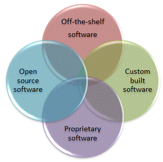

<div id="jsn-maincontent" class="span9 order1 row-fluid">
  <div id="jsn-maincontent_inner">
    <div id="jsn-centercol">
      <div id="jsn-centercol_inner">
        <div id="jsn-mainbody-content" class="jsn-hasmainbody">
          <div id="jsn-mainbody-content-inner1">
            <div id="jsn-mainbody-content-inner2">
              <div id="jsn-mainbody-content-inner3">
                <div id="jsn-mainbody-content-inner4" class="row-fluid">
                  <div id="jsn-mainbody-content-inner" class="span12 order1">
                    <div id="jsn-mainbody">
                      <div id="system-message-container"></div>

                      <div
                        class="item-page"
                        itemscope
                        itemtype="https://schema.org/Article"
                      >
                        <meta itemprop="inLanguage" content="en-GB" />

                        <div itemprop="articleBody">
                          <p></p>
                          <h1 style="text-align: center">Types of software</h1>
                          <p>
                            <strong>Introduction</strong><br />Software that you
                            can buy can have a number of different labels. These
                            include open source software and proprietary
                            software (sometimes called 'closed source
                            software'),&nbsp;off-the-shelf software and
                            custom-written software (sometimes called 'bespoke'
                            software),&nbsp;
                          </p>

                          <p>
                            
                          </p>
                          <p style="margin-top: 10px">
                            <strong>Open source</strong><br />When you buy a
                            piece of software, you can run it and use it but you
                            cannot see the code. That means that you cannot
                            modify it and you are not allowed to distribute it
                            to other people. There are, however, lots of
                            software applications where you can do exactly that.
                            You can download it and use it, distribute it to
                            others and you can also see the code. That means
                            that you can change it and generally play around
                            with it and experiment. This is a great way to learn
                            and improve your programming skills! Examples of
                            open source software include a Virtual Learning
                            Environment called Moodle and the operating system
                            known as Linux.
                          </p>
                          <p>
                            <strong
                              >Open source software and free software</strong
                            ><br />There are some situations where open source
                            software can have licences attached to them so an
                            application that is open source software is not the
                            same as 'free software'. However, the distinction is
                            very small and most open source software is indeed
                            free and vice verse. For the purposes of the GCSE
                            Computing course, however, it is best to keep a
                            clear distinction between open source software and
                            free software.
                          </p>
                          <p style="margin-bottom: 10px">
                            <strong
                              >Proprietary software (also called 'closed source'
                              software)</strong
                            ><br />Many of the programs you use today are known
                            as 'proprietary software'. That means someone owns
                            the legal rights to the program and the owner has
                            only given you permission to use it, usually (but
                            not always) by selling you a copy for a fee.
                            Windows, Serif applications and Microsoft Office are
                            good examples. If you want to use any of these
                            software titles, you must buy a copy. Once bought,
                            you don't actually own the software (although you do
                            have a copy of it) but you have bought the right to
                            use it. You can't make copies of it and distribute
                            them to friends because that breaks the licence
                            agreement you made when you bought the software. You
                            can't go and modify the code either. You have only
                            bought the right to use it. This type of software is
                            known as 'proprietary software'.
                          </p>
                          <p>
                            <strong>Off-the-shelf software</strong><br />The
                            phrase 'off-the-shelf' simply refers to software
                            that you can go out and buy, take home, install and
                            then use immediately. You don't have to wait for
                            someone to write and test the software, there will
                            usually be lots of forums and other places online to
                            get help and it can be used for many different jobs.
                            It is likely to have been tested by lots of people
                            using it and bugs will have already been reported
                            and corrected (but by no means is this always the
                            case). You will sometimes hear the phrase 'generic'
                            when talking about off-the-shelf software. This is
                            because the software can be adapted to many
                            different tasks. For example, if you used Word,
                            which is an off-the-shelf word processing
                            application, you could use it to write letters or
                            memos, design simple posters, create simple
                            spreadsheets and so on and it won't matter what
                            business you are in.
                          </p>
                          <p>
                            <strong>Custom written software</strong
                            ><br />Sometimes, you cannot use off-the-shelf
                            software or you don't want to for various reasons.
                            In this case, you have to hire a company to write
                            the software for you, or write it yourself if you
                            have the resources.
                          </p>
                          <p>
                            If some new technology came into being, it may
                            require features that are not available in
                            off-the-shelf packages. For example, when mobile
                            phones came into existence, new software had to be
                            developed so that they could be given the features
                            and functions we have all come to be familiar with.
                            Generic software applications could not have done
                            this. Some machines are one-off designs, for
                            example, the software needed to control space
                            equipment remotely. Again, off-the-shelf
                            applications wouldn't be appropriate here.
                            Sometimes, an off-the-shelf application can be used,
                            but needs to be adapted through specialist
                            programming. For example, if some data needs to be
                            read into a database but it is not yet in the form
                            that the database can use then some non-standard
                            software must be written to put the data in a form
                            that the database can use! A generic database
                            application can be used but some additional software
                            has been specially written to customise it.
                          </p>
                          <p>
                            <strong
                              >Custom-built software verses off-the-shelf
                              software</strong
                            ><br />When a problem has been identified that needs
                            a solution, someone is going to have to decide what
                            software to use. Will a custom-built piece of
                            software (sometimes called 'bespoke' software) be
                            used or will an off-the-shelf application be used?
                            For example, if a company needed to create a
                            customer database, do they commission a completely
                            new application in Pascal or Java or Visual Basic or
                            some other programming language, or do they
                            commission a product made using an off-the-shelf
                            generic application such as Access?
                          </p>
                          <p>
                            There are advantages and disadvantages to both
                            approaches.
                          </p>
                          <ul>
                            <li style="list-style-type: none">
                              <ul style="list-style-type: disc">
                                <li>
                                  You can buy and use off-the-shelf software
                                  straight away. Writing a completely new
                                  application can take a long time.
                                </li>
                                <li>
                                  Writing a new piece of software may take
                                  hundreds of man-hours. This will add a great
                                  deal to the final cost of the product!
                                  Off-the-shelf software is generally cheaper.
                                </li>
                                <li>
                                  Off-the-shelf software has been around a
                                  while. Any problems with the software may well
                                  have been documented along with solutions and
                                  'patches'. The company who produced the
                                  software may have fixed many reported problems
                                  and released later versions. Bespoke software
                                  will have to go through the process of proving
                                  itself.
                                </li>
                                <li>
                                  There is very often a wide range of sources of
                                  help and support on the Internet for
                                  off-the-shelf software. Help may come from
                                  support groups, user forums and newsgroups,
                                  for example. This type of help will not be
                                  available for bespoke software.
                                </li>
                                <li>
                                  Before deciding to go ahead with off-the-shelf
                                  software, it should be possible to seek
                                  recommendations from other users, perhaps
                                  using the Internet. It should be possible to
                                  gauge how good the product is, how good the
                                  support is, for example.
                                </li>
                                <li>
                                  If a company writes a new application, then
                                  they should support it. This can be both a
                                  good point and a bad point. If they wrote it,
                                  then they should know all about it and should
                                  be able to provide quality support. However,
                                  they may well charge a lot of money for
                                  support, or the support they give may not be
                                  that good. Unfortunately, however, the company
                                  that bought the software will be stuck with
                                  them - they will not easily be able to find
                                  additional help!
                                </li>
                                <li>
                                  If a product is made using off-the-shelf
                                  software, then it should be possible to
                                  maintain the product using anyone who knows
                                  about the particular package. There should be
                                  a big pool of experts to select from. If,
                                  however, a bespoke product is produced, it may
                                  be harder for anyone except the original
                                  company to maintain. And what happens if they
                                  go out of business?
                                </li>
                                <li>
                                  Bespoke applications can be tailor-made for an
                                  organisation. It provides exactly what
                                  functions the company needs, whatever they
                                  are.
                                </li>
                                <li>
                                  Bespoke applications can be designed to
                                  integrate with whatever software and hardware
                                  currently exists in the company.
                                </li>
                                <li>
                                  There may well be situations where an
                                  off-the-shelf application doesn't exist that
                                  can solve a particular problem. In this case,
                                  the only option would be to build a new
                                  application from scratch.
                                </li>
                              </ul>
                            </li>
                          </ul>
                          <p></p>
                        </div>
                      </div>
                    </div>
                  </div>
                </div>
              </div>
            </div>
          </div>
        </div>
      </div>
    </div>
  </div>
</div>
